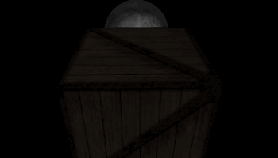
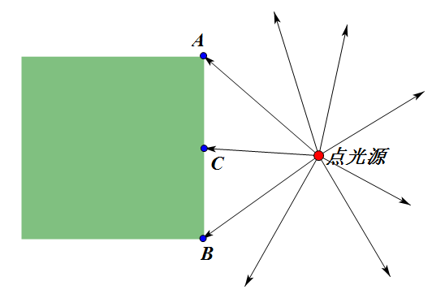
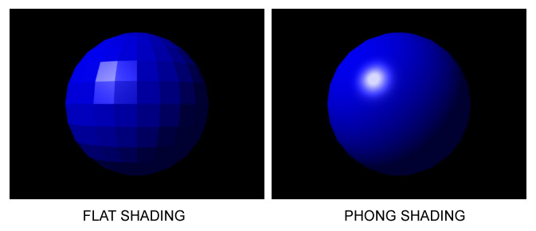

效果如图16。

图16
经过前面的章节，应该已经理解了顶点着色器、片元着色器这两部分别针对的是什么样的数据。之前我们计算光照，是在顶点着色器中，计算出每个顶点的光照增益，这个增益值在传给片元着色器的过程中，会在顶点与顶点之间差值。想一下图17的情况。
效果如图17。

图17
光源照在A点和B点，计算出的增益效果是很接近的，且都比较暗。按照常理，光源照在C位置，由于几乎是垂直照射，应该比A和B的位置亮很多。而在逐顶点计算光照的过程中，由于C不是顶点，它的光照增益是由A到B差值得到的，那么将和A、B的光照增益接近。
在逐片元计算光照过程中，我们在顶点着色器中只计算A和B在矩阵变换后的法向量，这个法向量也将在传给片元着色器的过程中差值，图17的情况C和A、B的法向量相同。在片元着色器再计算光照增益，C的法向量方向与点光源照到C的方向几乎相同，就能计算出更为真实的光照效果。对于弧面，通过法向量的差值，就可以得到平滑的法向量变化，进而得到平滑的光照效果。维基百科这张图形象说明了逐顶点与逐片元在处理弧面光照效果的差别。

图18
本例的演示页，打开/关闭逐片元计算光照，可以看到板条箱中间的光照效果不同。关闭纹理，就更容易看出月球表面光照效果在使用逐片元计算光照时更为平滑。
<script id = "per-vertex-lighting-vs" type = "x-shader/x-vertex">
//...
</script>
<script id = "per-vertex-lighting-fs" type = "x-shader/x-fragment">
//...
</script>
把之前逐顶点计算光照的shader控件的id改一下，作为区分。
<script id = "per-fragment-lighting-vs" type = "x-shader/x-vertex">
attribute vec3 aVertexPosition;
attribute vec3 aVertexNormal;
attribute vec2 aTextureCoord;
uniform mat4 uMVMatrix;
uniform mat4 uPMatrix;
uniform mat3 uNMatrix;
varying vec2 vTextureCoord;
varying vec3 vTransformedNormal;
varying vec4 vPosition;
void main(void)
{
vPosition = uMVMatrix * vec4(aVertexPosition, 1.0);
gl_Position = uPMatrix * vPosition;
vTextureCoord = aTextureCoord;
vTransformedNormal = uNMatrix * aVertexNormal;
}
</script>
<script id = "per-fragment-lighting-fs" type = "x-shader/x-fragment">
precision mediump float;
varying vec2 vTextureCoord;
varying vec3 vTransformedNormal;
varying vec4 vPosition;
uniform bool uUseLighting;
uniform bool uUseTextures;
uniform vec3 uAmbientColor;
uniform vec3 uPointLightingLocation;
uniform vec3 uPointLightingColor;
uniform sampler2D uSampler;
void main(void)
{
vec3 lightWeighting;
if (!uUseLighting)
{
lightWeighting = vec3(1.0, 1.0, 1.0);
}
else
{
vec3 lightDirection =
normalize(uPointLightingLocation - vPosition.xyz);
float directionalLightWeighting =
max(dot(normalize(vTransformedNormal), lightDirection), 0.0);
lightWeighting =
uAmbientColor + uPointLightingColor * directionalLightWeighting;
}
vec4 fragmentColor;
if (uUseTextures)
{
fragmentColor =
texture2D(uSampler, vec2(vTextureCoord.s, vTextureCoord.t));
}
else
{
fragmentColor = vec4(1.0, 1.0, 1.0, 1.0);
}
gl_FragColor = vec4(fragmentColor.rgb * lightWeighting, fragmentColor.a);
}
</script>
加入新的逐片元计算光照的shader。可以看到，顶点着色器的任务变少了，只需要计算好法向量。片元着色器得到差值后的法向量后，用类似逐顶点计算光照的顶点着色器的方法来计算光照增益。要注意的是差值后的法向量不一定是单位向量，我们需要把它normalize()一下。
var currentProgram;
var perVertexProgram;
var perFragmentProgram;
function initShaders()
{
perVertexProgram =
createProgram("per-vertex-lighting-vs", "per-vertex-lighting-fs");
perFragmentProgram =
createProgram("per-fragment-lighting-vs", "per-fragment-lighting-fs");
}
把之前的initShaders写成了createProgram这个用来调用的函数，分别加载两种着色器方案。
function drawScene()
{
//...
var perFragmentLighting = $("#per-fragment").is(":checked");
if(perFragmentLighting)
{
currentProgram = perFragmentProgram;
}
else
{
currentProgram = perVertexProgram;
}
gl.useProgram(currentProgram);
}
不同的shader都加载编译链接好之后，就可以这样在绘制的时候切换了。